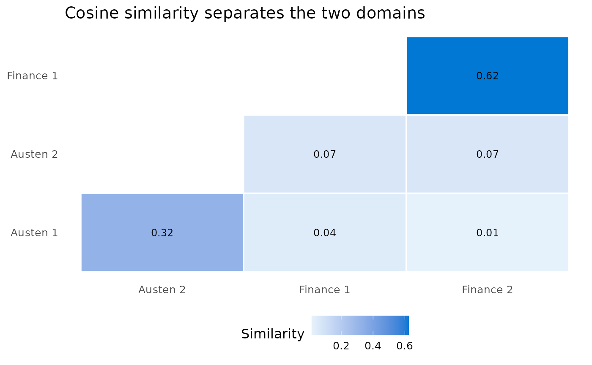
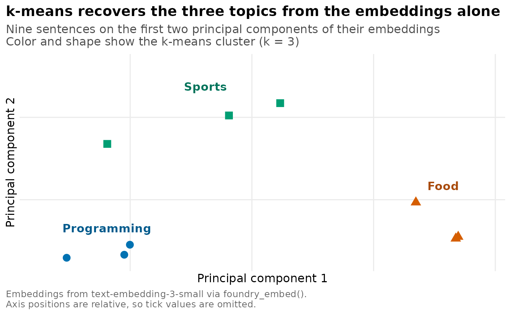

What embeddings are for
Embeddings are numerical representations of text that capture semantic meaning. When you convert text to an embedding, you get a vector of numbers (often 1,536 or 3,072 dimensions depending on the model). Texts with similar meanings tend to have similar vectors.
Use embeddings when you need to:
- Find documents related to a query by meaning, not only keywords.
- Measure how similar two pieces of text are.
- Cluster open-ended responses into themes.
- Find near-duplicate responses or records.
- Feed text-derived numeric predictors into downstream models.
Unlike keyword matching, embeddings understand that “automobile” and “car” are semantically similar, even though they share no letters.
Generating embeddings with foundry_embed()
The examples below embed real sentences from Jane Austen’s Pride
and Prejudice, available in the janeaustenr package.
Using a well-known public-domain text makes the output easy to reason
about: the opening lines share vocabulary and sentiment, so their
embeddings should sit close together.
library(foundryR)
austen_lines <- c(
"It is a truth universally acknowledged, that a single man in possession of a good fortune, must be in want of a wife.",
"However little known the feelings or views of such a man may be on his first entering a neighbourhood.",
"Mr. Bennet was so odd a mixture of quick parts, sarcastic humour, reserve, and caprice."
)
embedding <- foundry_embed(austen_lines[1], model = "text-embedding-3-small")
embedding
#> # A tibble: 1 × 7
#> .input_idx text embedding n_dims .error .error_msg raw_response
#> <int> <chr> <list> <int> <lgl> <chr> <list>
#> 1 1 It is a truth univ… <dbl> 1536 FALSE NA <named list>The result is a tibble with:
-
text: the original input text. -
embedding: a list-column holding the numeric vector. -
n_dims: the dimensionality of the embedding.
Embedding multiple texts
Pass a character vector to embed several texts in one call:
doc_embeddings <- foundry_embed(austen_lines, model = "text-embedding-3-small")
doc_embeddings
#> # A tibble: 3 × 7
#> .input_idx text embedding n_dims .error .error_msg raw_response
#> <int> <chr> <list> <int> <lgl> <chr> <list>
#> 1 1 It is a truth univ… <dbl> 1536 FALSE NA <named list>
#> 2 2 However little kno… <dbl> 1536 FALSE NA <named list>
#> 3 3 Mr. Bennet was so … <dbl> 1536 FALSE NA <named list>Controlling dimensions
The text-embedding-3-small and
text-embedding-3-large models can return shorter vectors.
Smaller dimensions mean faster similarity computations and less storage,
with some trade-off in precision:
compact <- foundry_embed(
austen_lines[1],
model = "text-embedding-3-small",
dimensions = 256
)
compact$n_dims
#> [1] 256Computing similarity with foundry_similarity()
Cosine similarity measures how close two embeddings are, from -1
(opposite) to 1 (identical). foundry_similarity() computes
every pairwise similarity in a tibble of embeddings. Here we contrast
the Austen lines with two sentences from a different domain so the split
is visible.
mixed <- c(
"It is a truth universally acknowledged, that a single man in possession of a good fortune, must be in want of a wife.",
"Mr. Bennet was so odd a mixture of quick parts, sarcastic humour, reserve, and caprice.",
"The quarterly revenue report showed a sharp rise in cloud subscriptions.",
"Analysts raised their earnings forecast after the strong cloud numbers."
)
similarities <- foundry_embed(mixed, model = "text-embedding-3-small") |>
foundry_similarity()
similarities
#> # A tibble: 6 × 3
#> text_1 text_2 similarity
#> <chr> <chr> <dbl>
#> 1 The quarterly revenue report showed a sharp rise in cloud s… Analy… 0.625
#> 2 It is a truth universally acknowledged, that a single man i… Mr. B… 0.324
#> 3 Mr. Bennet was so odd a mixture of quick parts, sarcastic h… The q… 0.0692
#> 4 Mr. Bennet was so odd a mixture of quick parts, sarcastic h… Analy… 0.0684
#> 5 It is a truth universally acknowledged, that a single man i… The q… 0.0444
#> 6 It is a truth universally acknowledged, that a single man i… Analy… 0.0146Results are sorted by similarity. The two Austen lines pair together and the two finance lines pair together, while cross-domain pairs score lower.

Use case: finding similar documents
A common application is ranking documents by relevance to a query. Embed the documents and the query, then sort by cosine similarity:
library(dplyr)
#>
#> Attaching package: 'dplyr'
#> The following objects are masked from 'package:stats':
#>
#> filter, lag
#> The following objects are masked from 'package:base':
#>
#> intersect, setdiff, setequal, union
documents <- c(
"How to install R packages using install.packages()",
"Data visualization with ggplot2 in R",
"Introduction to machine learning with Python",
"Statistical hypothesis testing explained",
"Building web applications with Shiny",
"Deep learning with TensorFlow and Keras"
)
doc_embeddings <- foundry_embed(documents, model = "text-embedding-3-small")
query_embedding <- foundry_embed(
"How do I create charts and graphs in R?",
model = "text-embedding-3-small"
)
cosine <- function(a, b) sum(a * b) / (sqrt(sum(a^2)) * sqrt(sum(b^2)))
query_vec <- query_embedding$embedding[[1]]
doc_embeddings |>
mutate(similarity = vapply(embedding, cosine, numeric(1), b = query_vec)) |>
arrange(desc(similarity)) |>
select(text, similarity) |>
head(3)
#> # A tibble: 3 × 2
#> text similarity
#> <chr> <dbl>
#> 1 Data visualization with ggplot2 in R 0.668
#> 2 How to install R packages using install.packages() 0.458
#> 3 Building web applications with Shiny 0.377Use case: clustering text
Embeddings work well as features for clustering. Here
stats::kmeans() groups a mix of programming, food, and
sports sentences without any labels:
texts <- c(
"Python is great for machine learning",
"R excels at statistical analysis",
"JavaScript powers modern web applications",
"Italian pasta with tomato sauce",
"Sushi is a popular Japanese dish",
"French croissants are flaky and buttery",
"Soccer is the world's most popular sport",
"Basketball requires speed and agility",
"Tennis matches can last for hours"
)
cluster_embeddings <- foundry_embed(texts, model = "text-embedding-3-small")
embedding_matrix <- do.call(rbind, cluster_embeddings$embedding)
set.seed(42)
clusters <- kmeans(embedding_matrix, centers = 3, nstart = 10)
cluster_embeddings |>
mutate(cluster = clusters$cluster) |>
arrange(cluster) |>
select(text, cluster)
#> # A tibble: 9 × 2
#> text cluster
#> <chr> <int>
#> 1 Python is great for machine learning 1
#> 2 R excels at statistical analysis 1
#> 3 JavaScript powers modern web applications 1
#> 4 Italian pasta with tomato sauce 2
#> 5 Sushi is a popular Japanese dish 2
#> 6 French croissants are flaky and buttery 2
#> 7 Soccer is the world's most popular sport 3
#> 8 Basketball requires speed and agility 3
#> 9 Tennis matches can last for hours 3
The clusters recover the three topics from the raw text alone.
Tips for working with embeddings
Choosing a model
| Model | Dimensions | Notes |
|---|---|---|
| text-embedding-ada-002 | 1,536 | Previous generation, widely used |
| text-embedding-3-small | 1,536 (configurable) | Newer, supports dimension reduction |
| text-embedding-3-large | 3,072 (configurable) | Highest quality, more expensive |
For most use cases, text-embedding-3-small balances
quality and cost.
Dimension trade-offs
Higher dimensions capture more nuance but need more storage, take longer to compare, and may not improve simple tasks. Consider reduced dimensions (256-512) for large-scale applications where speed matters more than precision.
Handling large collections
- Batch processing: embed documents in batches to respect rate limits.
- Caching: store embeddings in a database rather than regenerating them.
-
Approximate nearest neighbors: use libraries like
RcppAnnoyfor fast similarity search on large datasets.
# Example: process a large collection in batches. Not run here.
batch_embed <- function(texts, model, batch_size = 100) {
n_batches <- ceiling(length(texts) / batch_size)
results <- vector("list", n_batches)
for (i in seq_len(n_batches)) {
start_idx <- (i - 1) * batch_size + 1
end_idx <- min(i * batch_size, length(texts))
results[[i]] <- foundry_embed(texts[start_idx:end_idx], model = model)
Sys.sleep(0.5)
}
dplyr::bind_rows(results)
}